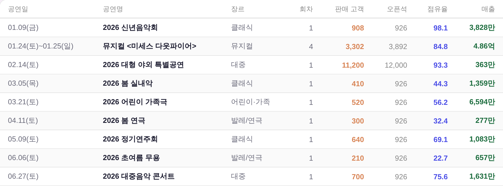
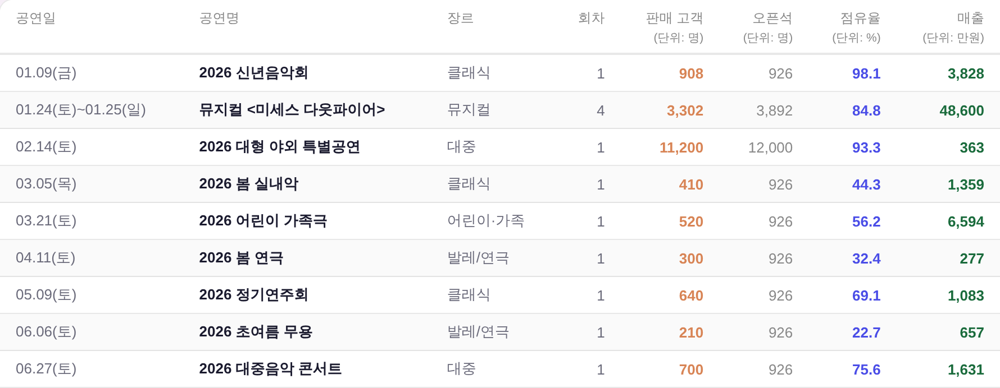
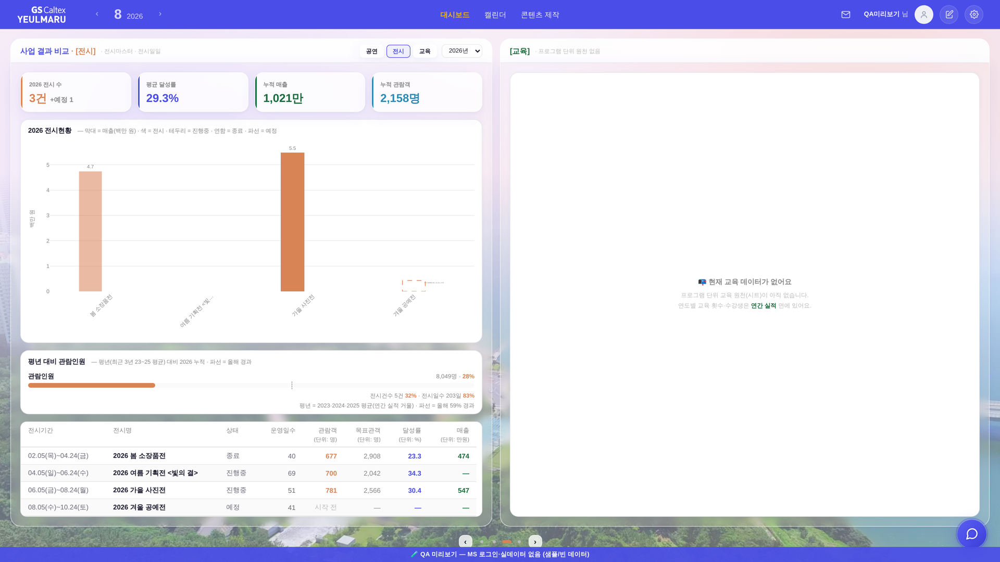

지시(운영자): 「이거 대시보드 단위를 좀 맞춰줄래? 판매 고객(단위: 명) · 오픈석(단위: 명) · 점유율(단위: %) · 매출(단위: 만원). 그리고 억 > 만원으로 통일」
면 = 대시보드 3면 사업 결과 비교. 아래 스냅샷은 정본 하네스(tools/smoke_layout.mjs)와 같은 방식으로
?qa=admin 목데이터를 1920×1080 헤드리스에 띄워 찍은 것 — 실API·실데이터 미접촉.
매출 값은 목데이터에 금액 축이 없어 운영자 스크린샷의 실제 금액대(3,828만 ~ 4.86억)를 조인 인덱스에 주입해 재현했다.
구 _bizMoney()는 1억을 경계로 표기를 갈아탄다: 1억 미만 = 3,828만(정수·천단위), 1억 이상 = 4.86억(소수 2자리).
그래서 한 열 안에서 자릿수 축이 두 개가 되고, 4.86과 6,594 중 어느 쪽이 큰지 읽고 나서 환산해야 알 수 있었다.
나머지 세 수치 열(판매 고객·오픈석·점유율)은 반대로 단위를 어디에도 안 적어 918이 명인지 석인지가 화면에 없었다.


| 열 | 전 | 후 — 머리글 | 후 — 값 |
|---|---|---|---|
| 판매 고객 | 918 | 판매 고객 (단위: 명) | 918 |
| 오픈석 | 926 | 오픈석 (단위: 명) | 926 |
| 점유율 | 98.1 | 점유율 (단위: %) | 98.1 |
| 매출 | 3,828만 / 4.86억 | 매출 (단위: 만원) | 3,828 / 48,600 |
단위를 아랫줄로 내린 이유 = 이름 뒤에 붙이면 열이 가로로 자라 좁은 우 열에서 가로 스크롤이 생긴다. 2줄로 내리면 머리글 한 줄분(≈14px)만 세로로 자라고 표 총폭은 그대로다(위 두 그림의 폭이 같다). 값 칸에서 단위 글자를 뺀 이유 = 머리글이 이미 단위를 말하므로 칸마다 붙이면 중복이고, 나머지 세 열이 원래 숫자만 적던 문법과도 어긋난다(공식 보고서 문법).
잉크·크기 = 머리글 색 --dim 상속 + 10.5px(차트 눈금과 같은 급) — 신규 토큰·색·컴포넌트 0.
KPI 카드·차트 툴팁은 머리글이 없다 → 거기선 만을 달고 쓴다(_bizMoney(v)).
표 칸만 머리글이 단위를 말하므로 숫자만 쓴다(_bizMoney(v,true)). 표기 규칙은 함수 하나에 남아 갈라지지 않는다.

전시 목록 표는 코드 주석대로 「공연 목록 표와 같은 마크업·같은 색 규칙 · 열 이름만 전시 용어」다. 같은 문법을 전시 용어로만 옮겼다 — 관람객(명) · 목표관객(명) · 달성률(%) · 매출(만원).
좌 「판매현황」 막대의 y축은 백만 원이다(260803 선택값). 이건 억이 아니라 차트 전용 축 배율이고,
만원으로 내리면 막대 위 라벨이 38.3→3,828, 486→48,600으로 3~6자가 되어
9개 막대에서 라벨끼리 겹친다(현재 폭 = 슬롯당 최대 46px). 그래서 지시 범위(억→만원)만 반영하고 차트 축은 그대로 뒀다.
차트 축도 만원으로 내리길 원하면 — 라벨을 천 단위 축약(4.9만원)이나 막대 폭·개수 조정과 함께 다시 설계해야 한다. 운영자 판단 사항.
| 파일·함수 | 바뀐 것 |
|---|---|
index.html _bizMoney(v,bare) | 1억 경계 분기 삭제 → 만 하나로 고정. bare = 단위 글자 없이 숫자만(표 칸용) |
_bizCompRender 목록 표 머리글 | 이름 배열 → [이름, 단위] 배열. 단위가 있으면 아랫줄 (단위: …) · vertical-align:top |
_bizCompRender 매출 칸 | _bizMoney(g._rev) → _bizMoney(g._rev,true) |
_bizmExhib 목록 표(머리글·매출 칸) | 위와 같은 문법을 전시 용어로 |
| 검사 | 결과 |
|---|---|
python3 tools/check_design.py | PASS — raw hex 1590/1590 무변 · :root 2블록 · 신규 고아·이중정의 0 |
python3 tools/check_refs.py | PASS |
node tools/build_annual_yr.mjs | PASS (_YR 무접촉) |
node tools/smoke_layout.mjs | PASS — 1920×1080 이젤·흰 라인 계약 유지(박스 Δ0 · 흰 카드 하단 Δ0 · 안선 밀착 · 흔들림 0) |
머리글이 2줄이 되면서 표가 세로로 ≈14px 자라지만, 표 박스는 data-bizmcap으로 안선에 못 박혀 있어 흰 라인 하단선은 그대로다(위 스모크가 그걸 잰다).